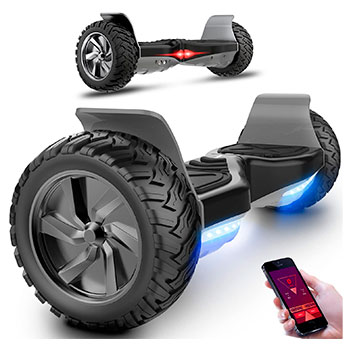

Una tabla de dos ruedas autoequilibrada, aeropatin o tabla flotante es un vehiculo de bateria recargable portatil. Consta de dos ruedas unidas por dos pequenas plataformas, las cuales cuentan con un mecanismo de equilibrio interno, sobre las cuales el usuario esta parado.
VENTAJAS
Un simple paseo se puede convertir en una aventura sobre las ruedas de tu patinete electrico. Asi, tanto si vas solo como si decides dar una vuelta con tus amigos, cuentas con este magnifico vehiculo a tu disposicion que te ofrecera la maxima movilidad.
Ir a la universidad o al trabajo nunca fue tan estiloso como con tu patinete electrico. No solo llegaras en poco tiempo, sino que, ademas, seras la envidia de todos. Y es que, este patin puede convertirse en una util herramienta para ayudarte a mejorar tus rutinas diarias como los tediosos desplazamientos que todos tenemos que realizar por las mananas al trabajo o el colegio. A partir de ahora llegaras mucho antes y ademas disfrutando del entorno y sin dificultades de aparcamiento.
En cuanto al consumo energetico, debes saber que los patinetes electricos estan provistos de baterias que hacen posible todos tus desplazamientos diarios. Solo tendras que cargar la bateria, como si de un movil se tratase, entre 4 y 6h, y tendras autonomia suficiente para recorrer hasta 25 kilometros y a una velocidad que te permite llegar a tu destino de manera rapida y segura.
Como ocurre con cualquier vehiculo, los patinetes tambien disponen de sistemas de seguridad que incluyen robustos neumaticos capaces de soportar un peso elevado, algunos llegando a sustentar los 100 Kg. Cuentan ademas, con un sistema de aceleracion en el mango y frenado tanto delantero como trasero, y puede accionarse de forma manual su sillin para garantizar tu seguridad en los desplazamientos por cualquier terreno. Ademas, dispone de un adecuado sistema de iluminacion tanto en la zona delantera como en la trasera, que sirven para ser vistos por la noche.
Estos vehiculos a diferencia de lo que pienses pueden alcanzar hasta los 75 kilometros por hora, aunque lo normal es una velocidad de entre 10 y 30 k/h, todo dependera del tipo y caracteristicas que busques.
Ya no solo es la comodidad de ir de un sitio a otro en tu patinete electrico, sino que, ademas, puedes incorporarle una cesta y asi llevar el maletin, la mochila o hasta la compra, de la manera mas divertida y comoda.
Estos vehiculos ademas son muy sencillos de trasportar ya que pesan muy poco, por lo que podras cargarlos con gran facilidad.
Debido al poco peso que tienen, asi como al reducido tamano, son muy sencillos de almacenar, por lo que podras guardarlos de forma sencilla en algun lugar de la casa, porque no ocupan espacio.
Existen muchos modelos diferentes de patinetes electricos adecuados a cada miembro de la familia, desde el peque al adulto, e incluyendo personas mayores, a quienes pueden serle de gran utilidad por facilitar sus desplazamientos. Imagina un dia de diversion familiar en vuestros patinetes electronicos.
A todas estas ventajas que ya conoces debes anadir una mas, y tan importante como las anteriores, y es que este vehiculo es ecologico, de manera que puedes utilizarlo todo el tiempo que quieras con la tranquilidad de no estar vertiendo ningun tipo de contaminacion al medio, ya que es un vehiculo 100% sostenible.
¿SON SEGURAS?
Esta es una cuestion que la gente ha estado debatiendo intensamente durante varios meses. En general, un aeropatin es tan segura como una patineta. Sin duda, toma una cierta cantidad de tiempo y practica para aprender a controlarlo con seguridad sin caerse. Necesitan una cierta cantidad de saldo para poder ser utilizados de manera efectiva.
LOS MEJORES HOVERBOARDS ELECTRICOS DEL 2022
SmartGyro X2
El SmargGyro X2 tiene dos microsensores que siguen los movimientos naturales del cuerpo y te permiten avanzar, retroceder y girar. El peso minimo que se necesita para este equilibrado es 20 kg y el maximo permitido 120 kg. Eso si, ten en cuenta que manejar un hoverboard por primera vez requiere cierta practica. Y si te cuesta usarlo como hoverboard, puedes acoplar un kart y asi conducirlo mas facilmente sentado.
Bluewheel HX510
El Bluewheel HX510 es un modelo de alta gama. Tiene 2 potentisimos motores de 700 W con los que puede alcanzar una velocidad maxima de 16 km/h. Ademas, su potencia de funcionamiento puede incrementar hasta en un 50% en comparacion con los motores electricos convencionales, una caracteristica muy util para subir cuestas. La carga de peso minima para que funcione correctamente es 20kg y soporta, como maximo, 120 kg.
FUNDOT
El hoverboard Fundot puede subir pendientes maximas de 15* y alcanzar una velocidad maxima de 15 km/h gracias a su motor de doble eje. Cuando superas cierta velocidad, emite un aviso acustico para advertirte de que puede ser peligroso.
MARKBORD
Tiene una estructura muy robusta. Sus ruedas de goma son bastante resistentes y permiten conducirlo por cualquier tipo de terreno. El espacio en el que apoyas los pies es mas ancho, una caracteristica que facilita el equilibrio y las maniobras. Soporta una carga maxima de 120 kg.

Bluewheel HX380
Como buena marca alemana, Bluewheel se preocupa especialmente de la seguridad. Asi que si es la primera vez que vas conducir un hoverboard, este modelo es una buena opcion para ti. Las caracteristicas que lo hacen especialmente seguro son:
Funcion de auto-equilibrio: proporcionada por una serie sensores integrados: facilita que mantengas el equilibrio mientras lo conduces.
Aplicacion movil: con ella puedes limitar la velocidad maxima, hacer un seguimiento por GPS de las rutas seguidas, controlar de forma inteligente la bateria y configurar el modo de seguridad infantil.
Tiene la certificacion CE: identifica aquellos productos que cumplen con las obligaciones contenidas en la legislacion de la UE, garantizando por tanto, que son seguros.